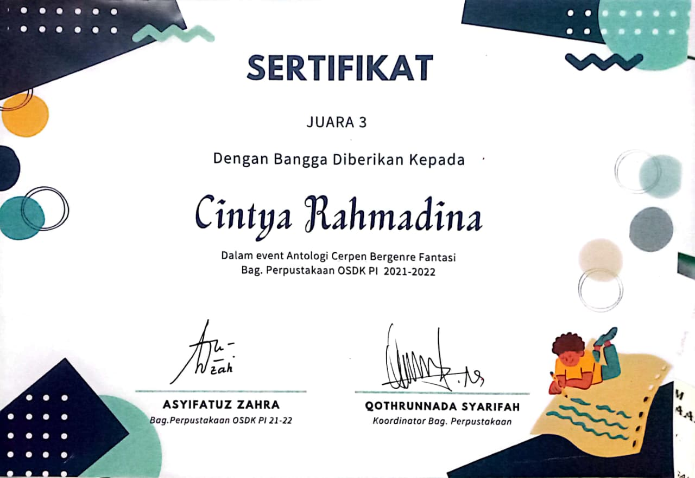
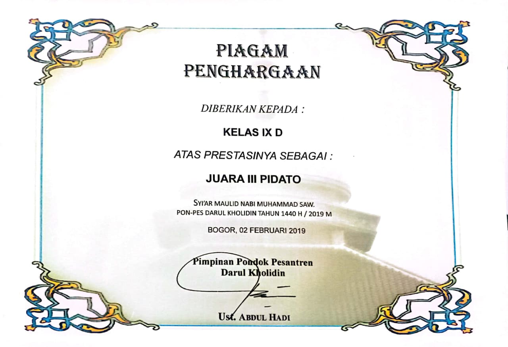
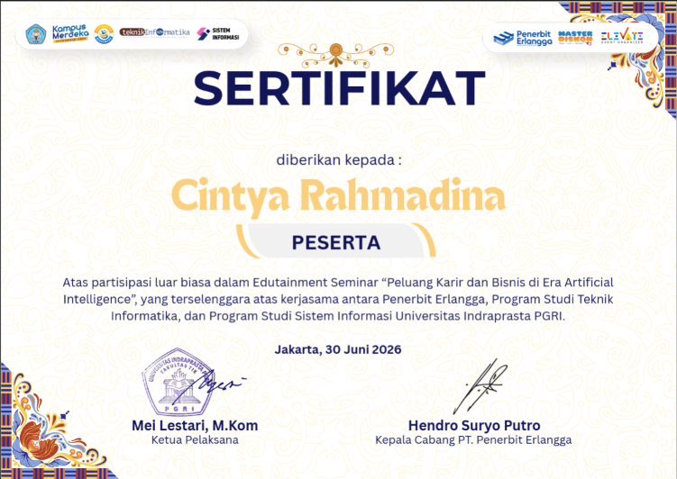
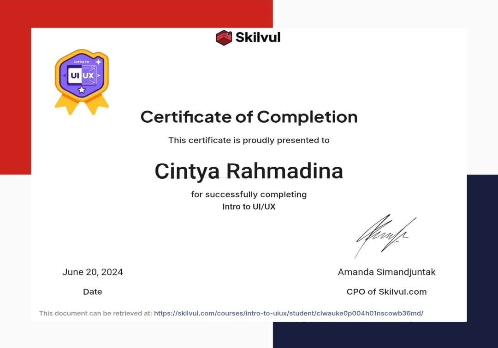
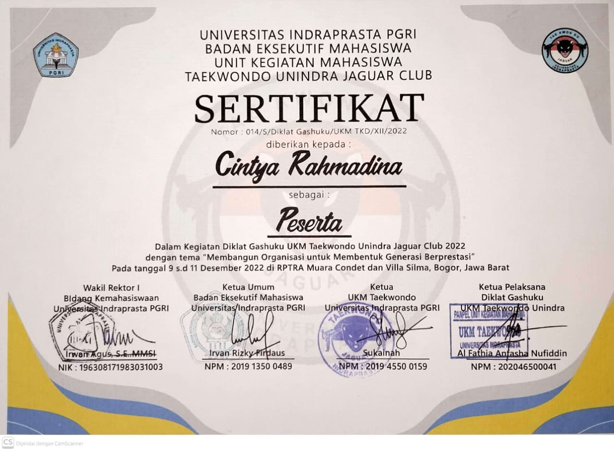

Halo, ini Cintya
Creative Thinker With an Informatics Engineering's Background
Nama
Cintya Rahmadina
Umur
22 Tahun
MBTI
INTJ
Domisili
Depok, Indonesia
Hobi
Membaca dan Menulis
Creative Thinker With an Informatics Engineering's Background
Cintya Rahmadina
22 Tahun
INTJ
Depok, Indonesia
Membaca dan Menulis
Lulusan teknik informatika yang memiliki ketertarikan dibidang kreatif, baik dalam penulisan maupun penembangan ide dalam suatu project. Terbiasa melakukan riset , menyusun informasi yang diolah menjadi tulisan yang terstruktur dan mudah dipahami. Aktif dalam kepanitiaan sebagai penanggung jawab acara dan humas serta menjadi bendahara umum pada organisasi salah satu ukm. selain itu pernah menjuarai beberapa lomba seperti lomba menulis dan pidato semasa sekolah.
Universitas Indraprasta PGRI | 2022 - 2026
IPK: 3.47/4.0
SMAS Darul Kholidin | 2019 - 2022
Sistem Manajemen nilai dan absensi murid yang dibuat dengan netbeans dan MySQL. Yang sudah dilengkapi dengan sistem CRUD.
Lihat Projectsistem diagnosa gizi balita dengan tabel antropometri klasifikasi bb/u. Sistem dilengkapi dengan fitur CRUD, perhitungan nilai z-score, diagnosa gizi dengan bb/u, rekomendasi gizi, dan cetak laporannya.
Lihat ProjectMengelola proses peginputan data Murid SDI Baiturrahman berupa nilai dan absensi, mengontrol sistem dengan meminimalisir adanya human error
Bertanggung jawab mengelola semua jenis kegiatan menyangkut keuangan organisasi dan rutin membuat laporan bulanan, event, dan laporan akhir.
Membuat konsep desain acara dan bertanggung jawab terhadap publikasi serta menjaga public relations.
Beratanggung Jawab dalam memantau keseluruhan berjalan dari mulai sampai dengan selesai acara
Bertugas Mengembangkan ide dalam merancang acara dan membawa ide tersebut menjadi konsep yang nyata
Merancang acara dan mengawasi acara berjalan dengan lancar

2021
Meraih Juara 3 dalam event Antologi Cerpen Bergendre Fantasi yang diselenggarakan oleh Bagian Perpustakaan OSDK PI periode 2021–2022. Diterbitkan, Kode ISBN : 978-623-368-318-0

2019
Meraih Juara 3 dalam lomba pidato pada kegiatan Syiar Maulid Nabi Muhammad SAW yang diselenggarakan oleh Pondok Pesantren Darul Kholidin. Lomba ini meliputi 3 bahasa, yakni, bahasa indonesia, bahasa inggris, dan bahasa arab.

2026
Berpartisipasi dalam seminar mengenai peluang karier dan bisnis di era Artificial Intelligence yang diselenggarakan melalui kerja sama Penerbit Erlangga, Program Studi Teknik Informatika, dan Program Studi Sistem Informasi Universitas Indraprasta PGRI.

2024
Menyelesaikan pelatihan dasar UI/UX yang mencakup pemahaman mengenai antarmuka dan pengalaman pengguna dalam perancangan produk digital.

2022
Peserta Diklat Gashuku UKM Taekwondo Unindra Jaguar Club 2022, dengan kegiatan yang berfokus pada pengembangan organisasi, kedisiplinan, kerja sama tim, dan pembentukan karakter anggota.
Silakan unduh CV saya dalam format PDF untuk informasi lebih lengkap mengenai pendidikan, pengalaman, dan keterampilan saya.
Download CV